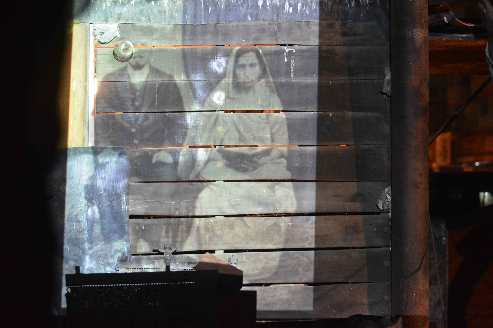

CV
- Semi-finalist for Institute for Public Art’s 2nd International Award for Public Art. 2015
- Peace Innovations Fund Grant. United States Institute of Peace. 2013-2014
- New York Foundation for the Arts’ Artspire fiscal sponsorship for Mera Karachi Mobile Cinema.
- National University of Singapore grant for collaborative research on (MKMC) with Nausheen H. Anwar
Grants and Awards
- Digital Marrakech Festival 4th edition. A Pakhtun Memory. Arab Media Lab Foundation. Marrakech. Nov. 28, 2014
- CityPossible Film Festival III. A Pakhtun Memory. Singapore. Nov. 6, 2014
- Karachi Conference Film Festival. A Pakhtun Memory. Karachi. Nov. 23, 2014
- 10 curated screenings by the Tentative Collective’s Mera Karachi Mobile Cinema in various neighborhoods of Karachi. 2012-2014
- Pursukoon Karachi Art Festival. The Kolachi Brothers (Mera Karachi Mobile Cinema). Karachi. 2013.
- Galerie Polaris. Mera Karachi Mobile Cinema, a project of the Tentative Collective. Paris. 2013
- VBB (Voices Breaking Boundaries). Exploring Rituals Production. Houston, TX. 2013
- Syracuse International Film Festival. A Pakhtun Memory. Syracuse, NY. 2012
- Artists of the Mohawk Hudson Regional. University Art Museum. A Pakhtun Memory. Winner of the
- Juror’s Award by Nato Thompson. Albany, NY. 2012
- VBB. Women Under Siege, Parts 1, 2: A Living Room Art Production. Houston, TX. 2012
Selected Exhibitions
- Cell Phone Cities. Artistic Interventions: Histories, Cartographies and Politics in Asia. March 30- April 2, 2015. IIAS and Hong Kong Baptist University. Hong Kong. http://rethinking.asia/event/artistic-interventions-histories-cartographies-and-politics-asia
- Low-Res. Video Workshop. The Sarai Programme, CSDS. Feb 21-22, 2015. Delhi. http://sarai.net/video-workshop-feb-21-22-2015/
- Mera Karachi Mobile Cinema at the Children’s Literature Festival Islamabad (Add)
- Tentative Collective at the Karachi Literature Festival in conversation with Nausheen Anwar- Talking about the ongoing Projections project. Feb 8, 2015
- A Pakhtun Memory. CityPossible Film Festival III. Asia Research Institute NUS. Singapore. Nov 6 2014
- Mera Karachi Mobile Cinema: Projection, Perception. The First International Karachi Conference. 2013
- Creative Leadership: Mera Karachi Mobile Cinema. National Museum, Karachi. 2014
- Art Politics. Aga Khan University. Humanities and Social Sciences Lectures, Karachi. 2013
Talks
- Chaudhri, Yaminay N., and Nausheen H. Anwar. “Mera Karachi Mobile Cinema: Projection, Perception & Public Space.” Web log post. Asian Urbanisms Blog. Asia Research Institute, National University of Singapore, 4 Dec. 2013. Web..
- Chaudhri, Yaminay N. “Karachi: Cell Phone Videos Tell Stories of Migrant Life.” Creative Time Reports. 9 Jan. 2013. Web.
- Chaudhri, Yaminay N. “Karachi: Cell Phone Videos Tell Stories of Migrant Life.” Web log post. 3quarksdaily. 2 Feb. 2013. Web. http://www.3quarksdaily.com/3quarksdaily/2013/02/karachi-cell-phone-videos-tell-stories-of-migrant-life.html#sthash.h8nWBhwr.dpuf>.
- Chaudhri, Yaminay N. “Karachi: Cell Phone Videos Tell Stories of Migrant Life.” Web log post. ArtAsiaPacific Blog. 22 Jan. 2013. Web.
- Chaudhri, Yaminay N. “Mera Karachi Mobile Cinema.” Ed. Gemma Sharpe and Framji Minwala. Indus: A Journal of Art, Culture and Design 1 (forthcoming) Print.
- Chaudhri, Yaminay N. “Mera Karachi Mobile Cinema: Methodology of Representation.” Karachi Conference Journal 1. Comp. Aliya I. Naqvi. (forthcoming). Print.